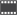

filtra per tipologia:
Questa applicazione esplora la connettività della regione Piemonte, visualizzando per ogni centrale le sezioni di censimento corrispondenti e la velocità nominale e reale.
centrale telefonica
punto di concentrazione della rete telefonica pubblica
sezioni di censimento
La sezione di censimento è l'unità territoriale minima di rilevazione, corrispondente in zone urbane ad un isolato o a parte di esso.
abitanti per sezione
velocità effettiva
numero di abitanti serviti
distanza della sezione di censimento dalla centrale
tempo indicativo di download di un file:
musica (5 MB)
video (700 MB)